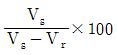
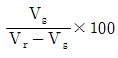
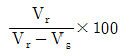
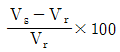

건축설비기사 (2004-05-23 기출문제)
1과목: 건축일반
1. 불식쌓기에 대한 설명 중 옳지 않은 것은?
- 통줄눈이 생겨서 덜 튼튼하지만 외관이 좋다.
- 미관을 위주로 하는 벽체 또는 벽돌담 등에 쓰인다.
- 벽의 모서리나 끝에는 반절 또는 이오토막을 쓰지 않고 칠오토막을 사용한다.
- 한 켜에서 마구리와 길이를 번갈아 놓아 쌓고, 다음 켜는 마구리가 길이의 중심부에 놓이게 쌓는다.
(정답률: 58%)

2. 철근콘크리트구조의 성립 이유에 대한 설명 중 옳지 않은 것은?
- 콘트리트는 철근이 녹스는 것을 방지한다.
- 콘크리트와 철근이 강력히 부착되면 철근의 좌굴이 방지된다.
- 철근과 콘크리트는 선팽창계수가 거의 같다.
- 압축응력은 철근이, 인장응력은 콘크리트가 부담하여 서로의 약점을 보완한다.
(정답률: 알수없음)
3. 왕대공 지붕틀에서 압축력과 휨모멘트를 동시에 받는 부재는 어느 것인가?
- 왕대공
- ㅅ자보
- 평보
- 중도리
(정답률: 84%)
4. 다음 중 대형창호에 멀리온(mullion)을 설치하는 가장 주된 이유는?
- 기밀성을 양호하게 하기 위하여
- 채광성을 양호하게 하기 위하여
- 차음성을 양호하게 하기 위하여
- 진동에 의한 유리파손을 방지하기 위하여
(정답률: 알수없음)
5. 백화점의 판매장 계획에 관한 설명 중 틀린 것은?
- 백화점 지하층에는 안정된 분위기로 비교적 선택에 시간이 걸리는 상품을 진열한다.
- 진열장 배치형식 중 직각배치는 판매장 면적이 최대한으로 이용된다.
- 동일층에서 수평적으로 높이의 차이가 있는 것은 바람직하지 않다.
- 판매장 통로 폭은 매장의 종류에 따라 다르다.
(정답률: 알수없음)
6. 시티 호텔(city hotel)에 속하지 않는 것은?
- commercial hotel
- residential hotel
- apartment hotel
- club house
(정답률: 알수없음)
7. 병실에 대한 설명 중 틀린 것은?
- 병실의 창문 높이는 90㎝ 이하로 하는 것이 좋다.
- 병실 출입구는 외여닫이로 하며, 최소 90cm 이상의 폭으로 한다.
- 환자마다 옷장 및 테이블 설비를 하는 것이 좋다.
- 침대의 방향은 환자의 눈이 창과 직면하지 않도록 하여 환자의 눈이 부시지 않게 한다.
(정답률: 알수없음)
8. 환기를 측정하는 방법이 잘못 연결된 것은?
- 유속측정 - 프로펠라 풍속계
- 오염농도측정 - 실내 CO2의 농도
- 환기량측정 - 가스추적법
- 가스농도측정 - 피토우관
(정답률: 알수없음)
9. 건축 음향에 대한 설명 중 잘못된 것은?
- 명료도는 소음이 증가하면 저하한다.
- 명료도는 잔향시간이 증가하면 증대한다.
- 음의 세기에 의한 명료도는 음압레벨이 70 ~ 80dB 에서 가장 좋다.
- 폰(phon)척도는 귀의 감각적 변화를 고려한 주관적인 척도이다.
(정답률: 알수없음)
10. 음의 세기 단위는?
- ㎐
- ㏈
- N/m2
- W/m2
(정답률: 19%)
11. 상점계획에 대한 기술 중 잘못된 것은?
- 고객의 동선은 원활하게 한다.
- 고객의 동선은 짧게, 점원의 동선은 길게 한다.
- 대면판매형식은 일반적으로 시계, 귀금속, 카메라, 화장품 상점 등에서 쓰여진다.
- 상점의 총 면적이란 일반적으로 건축면적 가운데 영업을 목적으로 사용되는 면적을 말한다.
(정답률: 알수없음)
12. 사무소건물의 실배치 계획 중 개방식 배치의 특징이 아닌 것은?
- 전 면적을 유용하게 이용할 수 있다.
- 커뮤니케이션의 융통성이 있다.
- 독립성과 쾌적감의 이점이 있다.
- 실의 길이나 깊이에 변화를 줄 수 있다.
(정답률: 알수없음)
13. 다음의 목조 벽체에 관한 기술 중 잘못된 것은?
- 토대의 단면 크기는 보통 기둥과 같게 하거나 다소 크게 한다.
- 샛기둥은 가새의 옆휨을 막는데 유효하다.
- 깔도리는 2층 마루바닥이 있는 부분에 수평으로 대는 가로재이다.
- 평벽은 판벽 또는 바름벽을 기둥 바깥쪽에 두어 기둥이 보이지 않게 한 구조이다.
(정답률: 40%)
14. 학교운영방식 중 교과교실형(V형)에 대한 설명으로 옳지 않은 것은?
- 모든 교실이 특정교과를 위해서 사용되고 일반교실은 없다.
- 교과목에 필요한 시설의 질을 높일 수 있다.
- 학생들의 이동이 심하므로 동선설계에 유의해야 한다.
- 초등학교 저학년에 대해 가장 권장할 만한 형이다.
(정답률: 알수없음)
15. 실내에 있는 사람이 느끼는 온열감각에 영향을 미치는 물리적 열환경 요소를 조합한 것으로 가장 옳은 것은?
- 열관류율, 열전도, 대류열, 복사열
- 온도, 습도, 기류, 복사열
- 온도, 습도, 기류, 대류열
- 열관류율, 열전도, 기류, 복사열
(정답률: 알수없음)
16. 건축물에 루버(louver)를 설치하는 가장 주된 이유는?
- 자연환기를 유지하기 위하여
- 외관상 변화를 주기 위하여
- 직사광선을 막기 위하여
- 비를 막기 위하여
(정답률: 알수없음)
17. 주택의 각실 계획에 관한 설명 중 가장 옳지 않은 것은?
- 거실은 주행위 개개의 복합적인 기능을 갖고 있으므로 이에 적합한 가구와 어느 정도 활동성을 고려한 계획이 되어야 한다.
- 노인방은 조용해야 하므로 주택 2층의 북측에 배치하는 것이 가장 바람직하다.
- 식당의 최소 면적은 식탁의 크기와 모양, 의자의 배치 상태, 주변 통로와의 여유공간 등에 의하여 결정된다.
- 주방은 거실 가까이에 두어 서비스 동선을 짧게 배려하는 것이 바람직하다.
(정답률: 알수없음)
18. 구조물의 주요부분을 지지점에서 달아매어 인장응력이 주응력이 되는 응력상태로 꾸미는 구조형식은?
- 조적식구조
- 철근콘크리트구조
- 현수구조
- 입체트러스구조
(정답률: 알수없음)
19. 공동주택의 건물단면형식 중 주거단위의 단면을 단층형과 복층형에서 동일층으로 하지 않고 반 층씩 엇나게 하는 형식은?
- 스킵 플로어 형식
- 필로티 형식
- 오픈 형식
- 플랫 형식
(정답률: 알수없음)
20. 기초의 계획 및 설치에 대한 유의사항으로 옳지 않은 것은?
- 지하실은 가급적 건물 전체에 균등히 설치하여 침하를 줄이는데 유의한다.
- 지반의 상태가 고르지 못하거나 편심 하중이 작용하는 건축물의 기초는 서로 다른 형태의 기초나 말뚝을 혼용하는 것이 좋다.
- 기초를 땅속 경사가 심한 굳은 지반에 올려놓을 경우 슬라이딩의 위험성을 고려해야 한다.
- 지중보를 충분히 설치하면 기초의 강성이 높아짐으로 부동침하 방지에 도움이 된다.
(정답률: 알수없음)
2과목: 위생설비
21. 급수량산정에 있어 냉각수를 필요로 하는 냉방용 또는 주방용 압축식 냉동기의 냉각수는 얼마정도로 하여야 하는가? (USRT=미국냉동톤)
- 10ℓ /min.USRT
- 13ℓ /min.USRT
- 19ℓ /min.USRT
- 24ℓ /min.USRT
(정답률: 25%)
22. 배수설비에서 통기수직관을 설치하지 않고 신정통기관만으로 배수와 통기를 효율적으로 할 수 있는 통기방식으로 알맞은 것은?
- 소벤트(sovent)방식
- 각개(individual)통기방식
- 환상(loop)통기방식
- 회로(circuit)통기방식
(정답률: 알수없음)
23. 스위블형 신축이음쇠의 특징에 대한 설명으로 틀린 것은?
- 굴곡부에서 압력강하를 가져온다.
- 설치비가 싸고 쉽게 조립할 수 있다.
- 고온 고압의 옥외 배관에 많이 사용된다.
- 신축량이 큰 배관에는 부적당하다.
(정답률: 알수없음)
24. 통기관(通氣管)에 대한 일반적 설명 중 틀린 것은?
- 각개통기관은 기구 트랩 웨어로부터 관경의 2배 이상 떨어진 위치에서 취출한다.
- 루프통기관의 취출위치는 최상류의 기구배수관을 배수 수평지관에 접속한 직후의 하류측으로 한다.
- 초고층 건물의 입상 배수는 최상층부터 세어서 15개층마다 결합통기를 한다.
- 가솔린 트랩의 통기관은 다른 계통의 통기관과 접속하지 말고 단독으로 대기중에 개방한다.
(정답률: 알수없음)
25. 수도용 동관에 대한 설명으로 옳지 않은 것은?
- 내식성이 거의 없으며 관의 마찰손실이 다른 관에 비해 상당히 크다.
- 평면충격에 약해 강관과 비교하면 굴곡에 따른 좌굴을 일으키는 단점이 있다.
- 유연성이 커서 가공이 쉽다.
- 중량이 강관의 1/2~1/3정도로 가벼워서 운반이 용이하다.
(정답률: 알수없음)
26. 스프링클러 20개를 동시에 방수하기 위한 수원의 저수량은?
- 32 m3 이상
- 56 m3 이상
- 64 m3 이상
- 72 m3 이상
(정답률: 알수없음)
27. 60℃의 물 150ℓ 와 10℃의 물 70ℓ 을 혼합시켰을 때 혼합탕의 온도는 얼마 정도인가?
- 64℃
- 54℃
- 44℃
- 34℃
(정답률: 알수없음)
28. 옥내소화전에 대한 설명 중 틀린 것은?
- 옥내소화전은 소방대상물의 층마다 설치하되 층의 각 부분으로부터 1개의 호스 접결구까지의 수평거리는 25m를 초과할 수 없다.
- 수원은 동시 개구수 1개에 2.6m3를 필요로 한다.
- 노즐선단의 방수압력은 2.5 kg/cm2 이상이고 방수량은 350 ℓ /min 이상이어야 한다.
- 소화 펌프는 접근이 용이하고, 화재에 의한 피해를 받지 않는 장소에 설치한다.
(정답률: 알수없음)
29. 탄산칼슘의 함유량이 110ppm이상인 지하수(경수)를 보일러에 사용할 경우 발생될 수 있는 현상이 아닌 것은?
- 연관 및 황동관을 침식시킨다.
- 과열의 원인이 될 수 있다.
- 보일러내에 스케일이 발생한다.
- 보일러의 수명이 단축된다.
(정답률: 알수없음)
30. 배수 중 진흙, 모래 등이 다량으로 함유되어 있을 때 그대로 하수도에 버리면 배수관 막힘의 원인이 되므로 침전시켜 저지하는 포집기는?
- 그리이스 포집기 (Grease Interceptor)
- 가솔린 포집기 (Gasoline Interceptor)
- 헤어 포집기 (Hair Interceptor)
- 샌드 포집기 (Sand Interceptor)
(정답률: 85%)
31. 급수설비를 설계하는데 있어서 다음의 항목 중 가장 먼저 결정해야 될 사항은?
- 수도 인입관의 설계
- 수수조의 크기
- 급수관의 관경 결정
- 급수량의 산정
(정답률: 알수없음)
32. 액화 천연가스(LNG)에 대한 설명 중 옳지 않은 것은?
- 주요성분은 프로판(C3H8),부탄(C4H10)이다.
- 발열량이 높고 무공해성이다.
- 자연발화나 착화온도가 높기 때문에 안전성이 높다.
- 비중이 상온에서 공기보다 가벼워 바닥에 누설가스가 체류하지 않는다.
(정답률: 40%)
33. 스프링클러 소화설비에 관한 기술 중 틀린 것은?
- 스프링클러의 급수계통은 일반의 급수계통과 별개의 계통으로 하는 것이 일반적이다.
- 스프링클러의 급수배관 방법에는 습식과 건식이 있다.
- 스프링클러 헤드의 배치는 내화구조인 경우 수평거리 1.5m 이하로 해야한다.
- 이 설비는 주로 고층 건축물, 지하층, 무창층 등 소방차의 진입이 곤란한 곳에 설치한다.
(정답률: 알수없음)
34. 고가수조의 소용량화를 위한 설계시 가장 중요시되는 유량은 다음 중 어느 것인가?
- 시간평균예상급수량
- 1일 급수량
- 순간최대예상급수량
- 시간최대예상급수량
(정답률: 알수없음)
35. 세정밸브식 대변기에 진공 브레이커(vacuum breaker)를 설치하여야 하는 가장 주된 이유는?
- 사용수량을 줄이기 위하여
- 급수소음을 줄이기 위하여
- 취기(냄새)를 방지하기 위하여
- 급수오염을 방지하기 위하여
(정답률: 알수없음)
36. 급수설비에서 펌프의 양수량이 2000 ℓ/min, 펌프의 효율이 60%, 펌프의 전양정 10m, 여유율 12%를 만족시켜 줄수 있는 소요동력은 몇 ps인가?
- 5.3ps
- 6.3ps
- 7.3ps
- 8.3ps
(정답률: 알수없음)
37. 분뇨 정화조에의 유입수 BOD가 300mg/ℓ 이며, 방류수 BOD가 150mg/ℓ 일때 BOD제거율은?
- 40%
- 50%
- 60%
- 70%
(정답률: 알수없음)
38. 30㎏/sec의 물이 지름 20㎝의 관속에 흐르고 있다. 평균유속으로 가장 적당한 것은?
- 0.95㎧
- 1.27㎧
- 1.54㎧
- 2.17㎧
(정답률: 알수없음)
39. 위생기구를 유니트화하는 목적과 가장 거리가 먼 것은?
- 현장작업의 증가
- 공기의 단축
- 공정의 단순화
- 노무비 절감
(정답률: 알수없음)
40. 급탕설비중 기수 혼합식에 대한 설명으로 옳은 것은?
- 열효율이 90% 이다.
- 사용 증기압은 1~4kg/cm2 정도이다.
- 물을 열원으로 사용한다.
- 소음이 적어 스팀사일런스를 사용할 필요가 없다.
(정답률: 25%)
3과목: 공기조화설비
41. 건구온도 20℃, 절대습도 0.015kg/kg'인 습공기 6kg의 엔탈피를 구하시오. (단, 공기 정압비열 0.24kcal/kg·℃, 수증기 정압비열 0.44kcal/kg· ℃, 0℃에서 포화수의 증발잠열 597.5kcal/kg)
- 13.9kcal
- 28.8kcal
- 54.6kcal
- 83.4kcal
(정답률: 25%)
42. 공조되는 인접실과 7℃의 온도차가 나는 경우에 벽체를 통한 관류열량을 구하시오. (단, 벽체의 열관류율은 0.45kcal/m2h℃이며, 인접실과 접한 벽체의 면적은 200m2이다.)
- 630kcal/h
- 750kcal/h
- 1360kcal/h
- 1500kcal/h
(정답률: 알수없음)
43. 저온공기분배방식의 특징에 대한 설명이다. 부적합한 것은?
- 덕트치수가 다른 시스템보다 적어져서 전외기운전이 불가능하다.
- 덕트에서 발생하는 결로를 방지하기 위해 단열에 주의를 기울여야 한다.
- 덕트말단 유닛은 병렬형 휀구동유닛을 필히 설치해야 된다.
- 다른 공조방식보다 휀의 소비동력이 감소하고 덕트크기가 감소하여 시공비가 감소된다.
(정답률: 알수없음)
44. 공조 부하 계산에 있어 틈새바람에 영향을 주는 요소로 거리가 먼 것은?
- 풍속
- 건물의 높이
- 건물의 구조
- 덕트의 크기
(정답률: 알수없음)
45. 공기여과기를 통과하기 전의 오염농도 C1 = 0.45㎎/m3, 통과한 후의 오염농도 C2 = 0.12㎎/m3이다. 이 여과기의 효율[%]은?
- 35%
- 42%
- 53%
- 73%
(정답률: 알수없음)
46. 다음중 덕트의 보강방법이 아닌 것은?
- rib break
- diamond break
- angle flange
- acme lock
(정답률: 알수없음)
47. 다음중 대형 백화점의 공기조화 방식으로 가장 적합한 것은?
- 각층유닛트방식
- 유인유닛트방식
- 팬코일유닛트방식
- 이중덕트방식
(정답률: 알수없음)
48. 배관내의 유속으로 가장 부적당한 것은?
- 펌프 흡입측 - 5m/s
- 배수관 - 1.5m/s
- 냉각수 - 1.5m/s
- 냉수 - 2m/s
(정답률: 알수없음)
49. 서울지방의 TAC위험율 2.5%에 상당하는 난방설계용 외기 온도는 -11℃이다. 이 온도 이하로 내려갈 수 있는 총 시간은? (단, 난방시기는 12월부터 3월까지 이다.)
- 72.6
- 102.4
- 204.8
- 365.7
(정답률: 알수없음)
50. 등압법으로 덕트를 설계할 경우 많은 풍량을 송풍하면 소음발생이나 덕트의 강도상 문제가 발생할 수 있기 때문에 일정 풍량 이상이면 등속법으로 설계하는 데 그 기준으로 맞는 것은?
- 5,000m3/h
- 10,000m3/h
- 30,000m3/h
- 40,000m3/h
(정답률: 73%)
51. 밸브를 개폐할 때 마찰 저항이 적고 주로 유체의 개폐목적으로 사용되는 것은 어느 것인가?
- 스윙 밸브
- 앵글 밸브
- 슬루스 밸브
- 글로브 밸브
(정답률: 알수없음)
52. 다음의 공조방식 중에서 냉매방식인 것은?
- 패키지유닛방식
- 유인유닛방식
- 멀티죤유닛방식
- 팬코일유닛방식
(정답률: 알수없음)
53. 강제순환식 온수난방장치의 순환펌프양정을 결정하는 조건으로 적합하지 않은 것은?
- 관경 50㎜ 이하에서는 유속을 1.2㎧ 이하로 한다.
- 단위저항은 10 ∼ 14㎜Aq/m 정도의 값이 쓰인다.
- 사무소건축 등의 대 건축물에서는 직관부 저항의 1.5∼ 2.0 배를 총 저항으로 가정할 수 있다.
- 일반적으로 사용되는 순환펌프의 양정은 30 ∼ 40m정도이다.
(정답률: 알수없음)
54. 다음 중에서 건물의 에너지 사용량에 대한 평가로서 건물의 연료원단위(M㎈/m2· 년)를 나타낸 것은?
- 연간연료사용량×발열량/건물의냉· 난방면적(m2)
- 연간연료사용량×발열량/건물의연면적(m2)
- 연간전력사용량/건물의냉· 난방면적(m2)
- 연간전력사용량/건물의연면적(m2)
(정답률: 알수없음)
55. 주방, 화장실 등 냄새 또는 유해가스, 증기발생이 있는 장소에 적합한 환기방식은?
- 압입흡출병용방식
- 압입방식
- 흡출방식
- 자연환기방식
(정답률: 60%)
56. 송풍기의 송풍량 제어방법에서 제어효율이 가장 나쁜 방식은?
- 스크롤 댐퍼제어
- 흡입 댐퍼제어
- 흡입 베인제어
- 회전수제어
(정답률: 알수없음)
57. 보일러에 관한 다음 기술중 부적당한 것은?
- 연관 보일러는 예열시간이 길고 수명도 짧다.
- 수관 보일러는 지역난방 또는 대형 건물에 주로 이용된다.
- 관류 보일러는 보유수량이 많으므로 일반 공조용에 많이 이용된다.
- 입형 보일러는 설치면적이 작고 취급이 용이하다.
(정답률: 40%)
58. 다음중 Fourier 법칙과 관계 있는 것은?
- 열전도
- 열대류
- 열복사
- 열관류
(정답률: 알수없음)
59. 송풍기의 풍량제어 방식 중 소비전력 감소량이 가장 큰 제어방식은?
- 댐퍼제어
- 석션베인제어
- 가변피치제어
- 가변속제어
(정답률: 37%)
60. 다음 중 히트 파이프(Heat pipe)와 관계 없는 것은?
- 증발부, 단열부, 응축부로 구성된다.
- 폐열회수, 태양열 집열장치 등에 이용된다.
- 전열(全熱)교환이 가능하다.
- 밀봉된 용기, 위크구조체, 작동유체가 필요하다.
(정답률: 10%)
4과목: 소방 및 전기설비
61. 전자의 전기량은 약 몇[C]인가?
- 8.855× 10-12
- 1.602× 10-19
- 3.14× 10-27
- 9.11× 10-31
(정답률: 알수없음)
62. 축전지의 특징에 대한 설명으로 틀린 것은?
- 알칼리축전지는 과충방전에 강하다.
- 연축전지 1셀의 공칭 전압은 약 2[V]이다.
- 알칼리축전지는 연축전지보다 기계적강도가 크다.
- 연축전지의 수명은 30년 이상이며 충전시간은 일반적으로 알칼리축전지보다 짧다.
(정답률: 10%)
63. 배선설비 중 분기회로의 종류가 아닌 것은?
- 10 [A]
- 15 [A]
- 20 [A]
- 30 [A]
(정답률: 알수없음)
64. 전력 1[kWh]의 팬코일유니트가 발생하는 열량[kcal]은 대략 얼마인가?
- 864
- 1126
- 2140
- 3612
(정답률: 64%)
65. 조명설계의 순서로 가장 적당한 것은?
- 소요조도결정 - 조명방식결정 - 전등종류결정 - 기구대수산출 - 광원배치
- 광원배치 - 기구대수산출 - 소요조도결정 - 전등종류결정 - 조명방식결정
- 조명방식결정 - 전등종류결정 - 소요조도결정 - 광원배치 - 기구대수산출
- 전등종류결정 - 소요조도결정 - 조명방식결정 - 기구대수산출 - 광원배치
(정답률: 알수없음)
66. 공조설비의 밸브나 댐퍼의 구동을 위하여 비례제어용으로 주로 사용되는 기기는?
- 히트 펌프
- 서보 모터
- 모듀트럴 모터
- 직동식 전자밸브
(정답률: 알수없음)
67. 공기조화설비 운전에 있어서 주로 여름철 냉방기간에 사용하는 프로그램으로서 외기를 받아들이는 양을 결정하는 근간이 되고 냉방부하를 최소로 하기 위하여 주로 사용하는 제어는?
- 최소부하제어
- 절전운전제어
- 야간사이클제어
- 엔탈피제어
(정답률: 알수없음)
68. 공기조화설비의 온도, 습도 등의 양을 제어하기 위한 방식이 아닌 것은?
- 시퀀스 제어
- 프로세스 제어
- 정치제어
- 피드백 제어
(정답률: 37%)
69. 송전단 전압을 Vs, 수전단 전압을 Vr이라 할 때 전압강하율을 나타낸 식은?




(정답률: 27%)
70. 강제 난방을 하는 장소 또는 수증기가 많이 발생하는 장소의 화재감지기로 가장 적합하지 않은 것은?
- 차동식 스폿형
- 이온화식 축적형
- 이온화식 비축적형
- 광전식 축적형
(정답률: 알수없음)
71. 전위차를 지속시켜 전류를 계속적으로 흐르게 하는 능력은?
- 전압
- 전원
- 기전력
- 대전
(정답률: 알수없음)
72. 2종류의 금속을 접합하고 열을 흡수하는 방향으로 전류를 흘리면 냉각장치가 되며 열을 방출하는 방향으로 전류를 흘리면 난방장치가 되는 효과는?
- 펠티어 효과
- 퍼킨제 효과
- 제벡 효과
- 열전대 효과
(정답률: 알수없음)
73. 어떤 도체에 흐르는 전류가 3A라면 2분간 전류가 흐를 때 통과한 전기량의 크기는?
- 120C
- 240C
- 360C
- 480C
(정답률: 알수없음)
74. 다음 중 교류 엘리베이터용으로 많이 사용되는 전동기는?
- 직권 전동기
- 단상 유도 전동기
- 동기 전동기
- 3상 유도 전동기
(정답률: 55%)
75. 설비자동제어중 에너지절약 관리제어가 아닌 것은?
- 전력 수요 제어
- 최적 기동/정지 제어
- 절전 운전 제어
- 카스케이드 제어(CASCADE 제어)
(정답률: 10%)
76. 220[V]용 100[W]전구에 흐르는 전류는?
- 약 4.4[A]
- 약 2.2[A]
- 약 0.9[A]
- 약 0.45[A]
(정답률: 알수없음)
77. 건축물 윗면의 모서리 부분, 뾰족한 형상을 한 부분의 위쪽에 수평도체식의 피뢰설비를 하는 방식이며, 중요한 건물로서 케이지 방식의 채택이 어려운 건물에서 채택하는 피뢰설비 방식은?
- 보통보호
- 간이보호
- 완전보호
- 증강보호
(정답률: 알수없음)
78. 전선의 절연물에 손상 없이 안전하게 흘릴 수 있는 최대 전류를 무엇이라 하는가?
- 허용전류
- 절연전류
- 부하전류
- 안전전류
(정답률: 62%)
79. 빌딩이나 공장에서 사용하는 전력기기 중 역률이 낮은 동력설비의 전력손실을 개선하기위해 사용하는 것은?
- 영상변류기
- 인터록
- 진상용콘덴서
- 콘서베이터
(정답률: 47%)
80. 극장 등의 복도에 설치하는 통로 유도등의 조명도는 바로 밑으로부터 0.5m 떨어진 바닥면에서 몇[lux] 이상이어야 하는가?
- 0.1
- 0.2
- 1
- 2
(정답률: 알수없음)
5과목: 건축설비관계법규
81. 건축물의 출입구에 설치하는 회전문은 계단이나 에스컬레이터로부터 얼마 이상의 거리를 두어야 하는가?
- 1m 이상
- 1.5m 이상
- 2.0m 이상
- 2.5m 이상
(정답률: 알수없음)
82. 철근콘크리트 건축물 공사시 공사감리자가 감리중간보고서를 작성해야 하는 시기에 해당되지 않는것은?
- 기초공사시 철근배치를 완료한 때
- 지붕슬래브 배근을 완료한 때
- 5층 이상 건축물인 경우 5개층마다 상부 슬래브배근을 완료한 때
- 지하층공사시 지하층 바닥 슬래브배근을 완료한 때
(정답률: 40%)
83. 건축법상 옥상광장 또는 2층 이상인 층에 있는 노대 등에 설치하는 난간의 높이는?
- 높이 0.8m 이상일 것
- 높이 0.9m 이상일 것
- 높이 1.0m 이상일 것
- 높이 1.1m 이상일 것
(정답률: 알수없음)
84. 다음 중 착공 5일전에 시장 · 군수 · 구청장에게 신고하면 규모에 관계없이 축조할 수 있는 가설건축물로 옳지 아니한 것은?
- 농업용 고정식온실
- 전시를 위한 견본주택
- 공장안에 설치하는 창고용 천막
- 조립식구조로 된 경비용에 쓰이는 가설건축물
(정답률: 알수없음)
85. 에너지이용합리화법에 의해 에너지사용기자재중 효율관리 기자재가 아닌 것은?
- 전기냉장고
- 풍력발전기
- 조명기기
- 전기냉방기
(정답률: 알수없음)
86. 자동화재탐지설비를 설치하여야 할 종교시설의 최소 연면적은?
- 2,000m2
- 3,000m2
- 4,000m2
- 5,000m2
(정답률: 알수없음)
87. 지하층의 비상탈출구에 관한 규정으로 옳지 않은 것은?
- 비상탈출구의 유효높이는 1.5미터 이하로 할 것
- 비상탈출구의 유효너비는 0.75미터 이상으로 할 것
- 비상탈출구의 진입부분에는 통행에 지장이 있는 물건을 방치하지 말 것
- 비상탈출구는 출입구로부터 3미터 이상 떨어진 곳에 설치할 것
(정답률: 알수없음)
88. 공사감리자가 허가권자에게 위법건축공사보고서를 제출하여야 하는 시기는 시정 등을 요청한 때에 명시한 시정기간이 만료되는 날부터 몇 일 이내인가?
- 5 일
- 7 일
- 10 일
- 15 일
(정답률: 알수없음)
89. 지하층과 지상층의 각각의 바닥면적이 500제곱미터인 건축물에 특별피난계단을 설치하지 아니할 수 있는 경우는?
- 11층인 사무소
- 16층인 오피스텔
- 20층인 갓복도식 아파트
- 지하 3층인 백화점
(정답률: 알수없음)
90. 건축관련법에서 경계벽 및 간막이 벽의 구조기준으로 옳은 것은?
- 철근콘크리트조로서 두께가 12센티미터 이상인 것
- 석조로서 두께가 12센티미터 이상인 것
- 무근콘크리트조로서 두께가 8센티미터 이상인 것
- 벽돌조로서 두께가 19센티미터 이상인 것
(정답률: 알수없음)
91. 에너지이용 합리화법에 의해 에너지사용 계획을 수립하여 산업자원부장관에게 제출하여야 하는 사업에 해당 되지않는 것은?
- 도시개발사업
- 도로개발사업
- 항만건설사업
- 관광단지개발사업
(정답률: 40%)
92. 다음중 기술관리인을 두지 않아도 되는 오수처리시설은?
- 분뇨처리시설
- 축산폐수공공처리시설
- 처리대상인원이 1,000인의 단독정화조
- 1일 처리 용량이 300m3인 오수처리시설
(정답률: 36%)
93. 다음중 제연설비를 설치하지 않아도 되는 시설은?
- 바닥면적이 300m2인 극장의 무대부
- 바닥면적이 1,500m2인 지하층 판매시설
- 연면적이 1,500m2인 지하가(터널을 제외)
- 25층 갓복도형 아파트의 특별피난 계단
(정답률: 54%)
94. 분뇨처리시설의 설치기준에 관한 설명중 옳지 않은 것은?
- 각 처리과정을 관리하는데 필요한 실험을 할 수 있는 실험실을 갖추어야 한다.
- 주요 처리과정의 구조물은 3계열 이상이 되도록 하여 고장 등에 대비할 수 있도록 한다.
- 축산폐수공공처리시설 또는 하수종말처리시설의 부지 또는 이에 인접한 장소에 설치함을 원칙으로 한다.
- 모기 등 해로운 벌레가 발생하거나 시설 외부로 나오는 것을 방지하고 악취가 발산되지 않도록 한다.
(정답률: 알수없음)
95. 산업자원부장관으로부터 에너지기술개발 실시를 할 수 있는 자로 부적합한 것은?
- 기업의 부설연구소
- 고등교육법에 의한 전문대학
- 산업기술연구조합
- 에너지관련 기술용역업자
(정답률: 알수없음)
96. 소방법상 방염처리를 하여야 할 특수장소가 아닌 것은?
- 호텔
- 기숙사
- 방송국
- 촬영소
(정답률: 알수없음)
97. 공사감리자가 공사시공자로 하여금 상세시공도면을 작성하도록 요청할 수 있는 건축물의 규모는 연면적의 합계가 얼마 이상인가?
- 1,500m2
- 3,000m2
- 5,000m2
- 10,000m2
(정답률: 알수없음)
98. 지상 5층, 지하 2층인 도매시장의 각층 바닥면적이 1,000m2 일때 피난층에서의 건축물 바깥쪽으로의 출구의 유효너비를 2m로 할 경우 출구의 갯수는?
- 3개
- 4개
- 5개
- 6개
(정답률: 알수없음)
99. 에너지관련 계획에 대한 사항 중 틀린 것은?
- 국가에너지기본계획의 계획수립자는 산업자원부장관이다.
- 에너지사용계획의 수립 주기는 5년마다 이다.
- 에너지기술개발계획은 10년 이상을 계획기간으로 한다.
- 지역에너지계획은 5년이상을 계획기간으로 한다.
(정답률: 15%)
100. 다음 중 스프링클러설비를 설치해야할 소방대상물 기준으로 틀린 것은?
- 층수가 11층 이상인 건축물로서 호텔의 용도로 사용되는 층이 있는 것은 전층
- 아파트로서 층수가 16층이상인 것은 16층이상의 층
- 지하가중 터널의 길이가 1,000m 이상인 것
- 복합건축물로서 연면적이 5,000m2 이상인 것은 전층
(정답률: 25%)